Visual works create reflection, confrontation, and recognition.
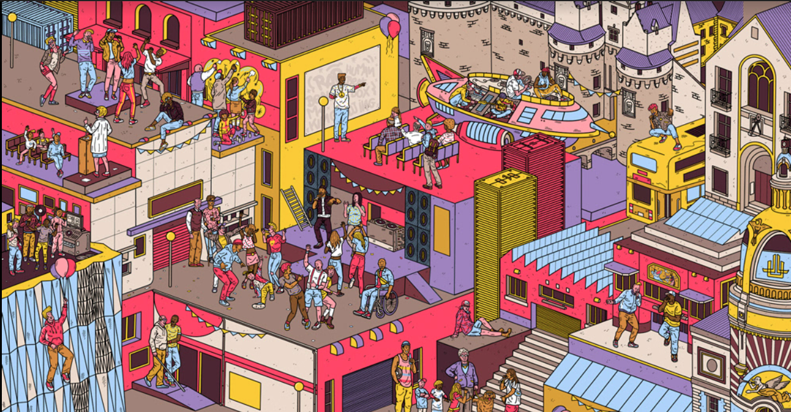
FXXK STEREOTYPE
A hybrid exhibition and electronic music concept on identity, projection, and self-definition.
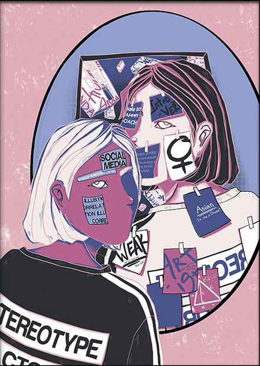
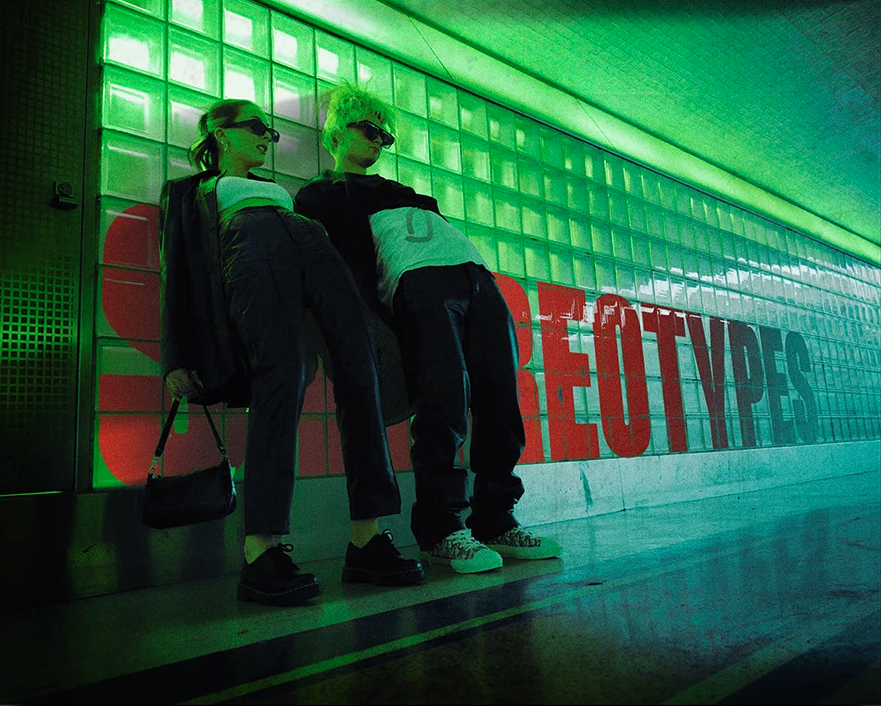
We are all read before we are known.
By family. By work. By gender. By culture.
By the roles we perform too well.
Daughter. Boss. Employee. Lover. Son. Immigrant. Provider.
Necessary identities, perhaps. But never the whole story.
FXXK STEREOTYPE begins here: in the tension between who we are expected to beand who we become when we reclaim the right to define ourselves.
This is not an exhibition next to a party.
It is one concept unfolding through multiple forms.
Electronic music transforms the same tension into movement, repetition, pressure, rupture, and release.
The audience is not only invited to watch, but to locate themselves inside the question.
Who names us? Which labels shape us? Which ones protect us, and which ones confine us?
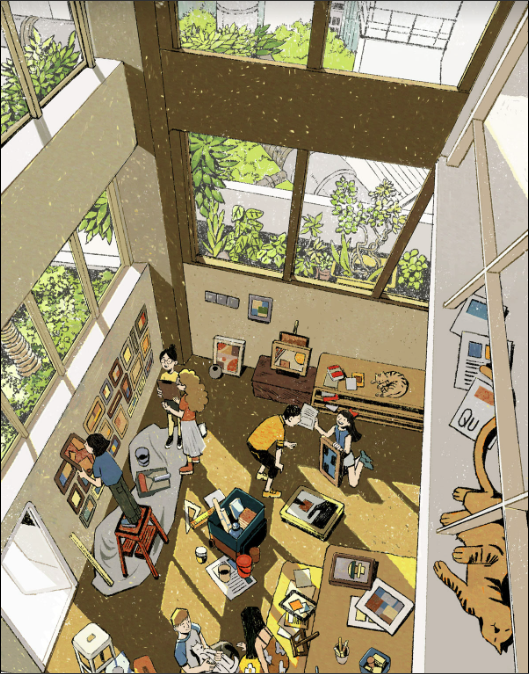
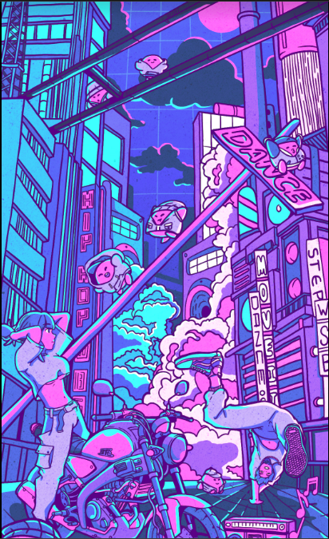
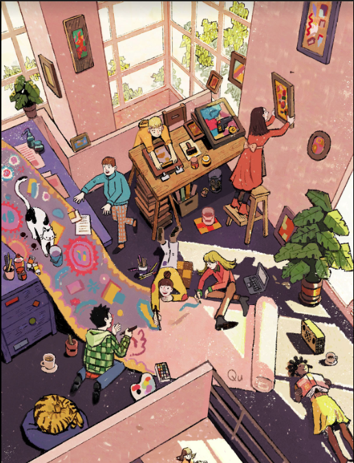
Exhibition
Visual, textual, photographic, sound-based, or moving-image works responding to imposed identities and chosen selves.
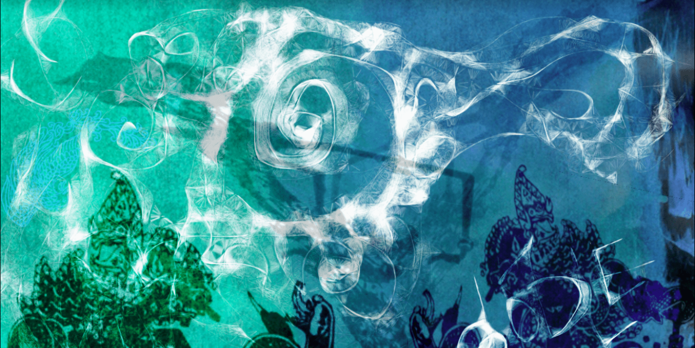
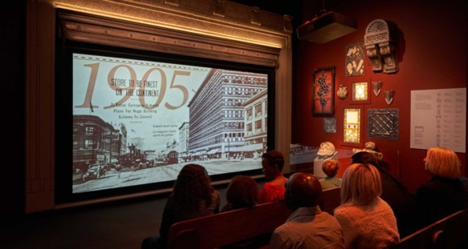
Electronic Music
A sonic arc moving through control, rupture, and release.
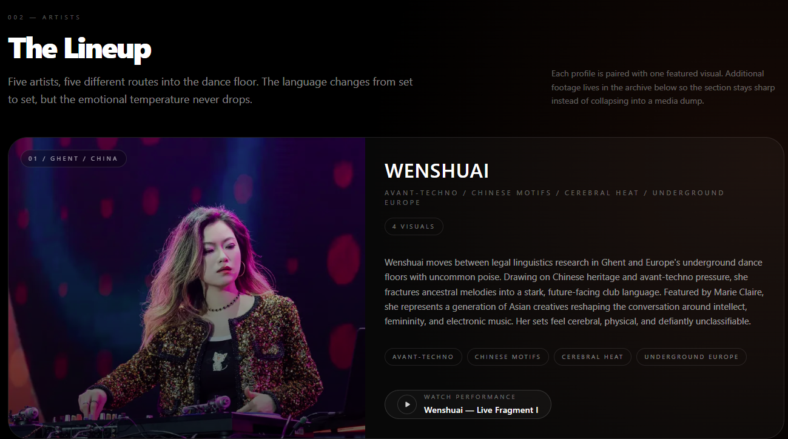
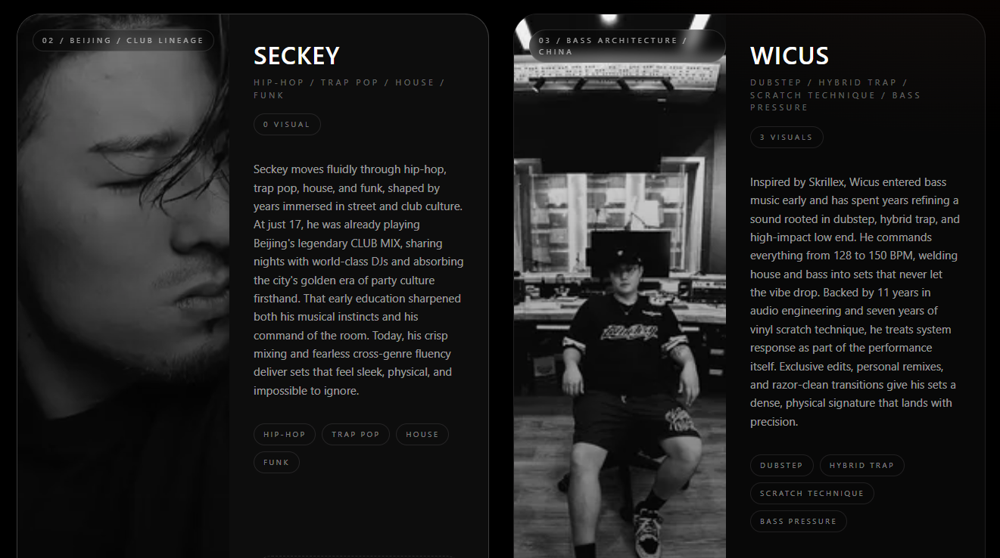
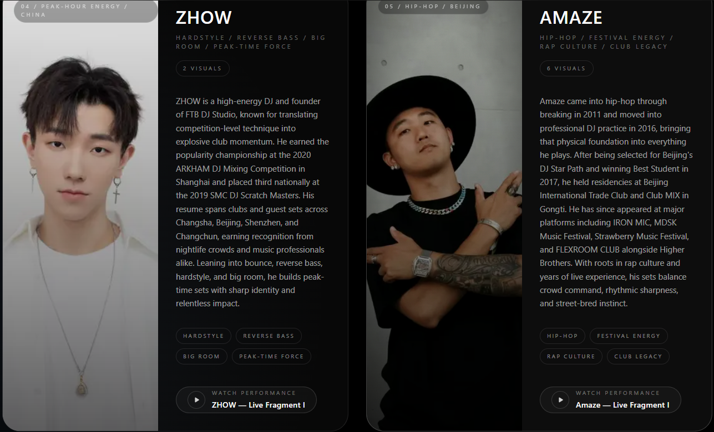
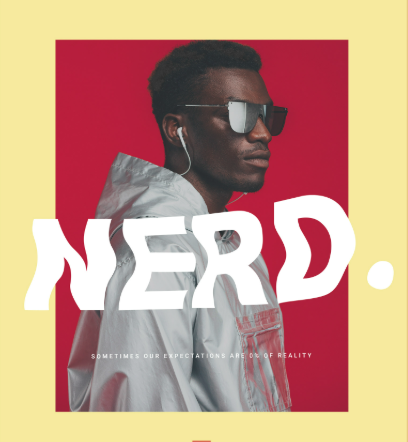
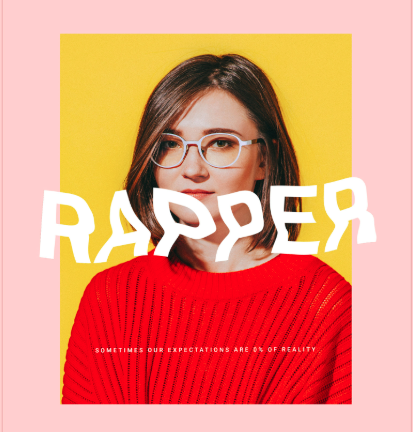
Participation
Optional audience interaction through voice or text:
“They told me I should be ____ / I choose to be ____.”
A space to reflect.
A space to dance.
A space to be.
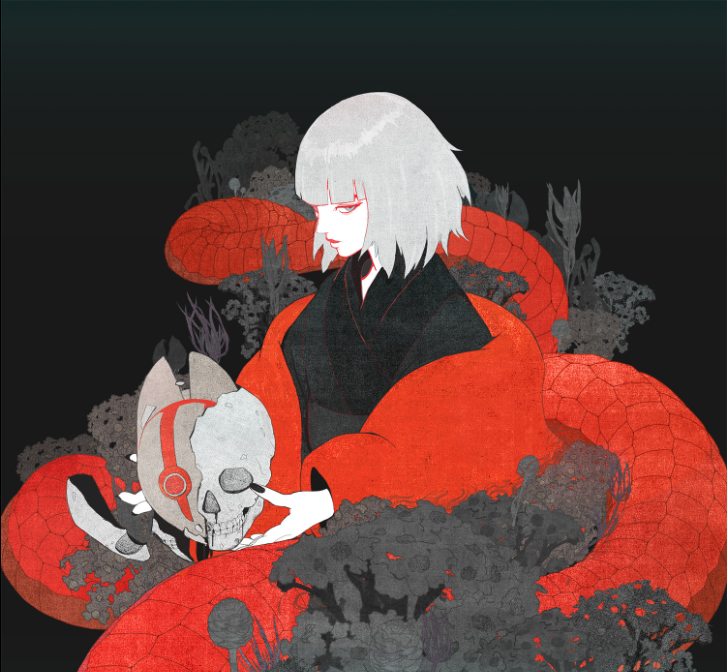